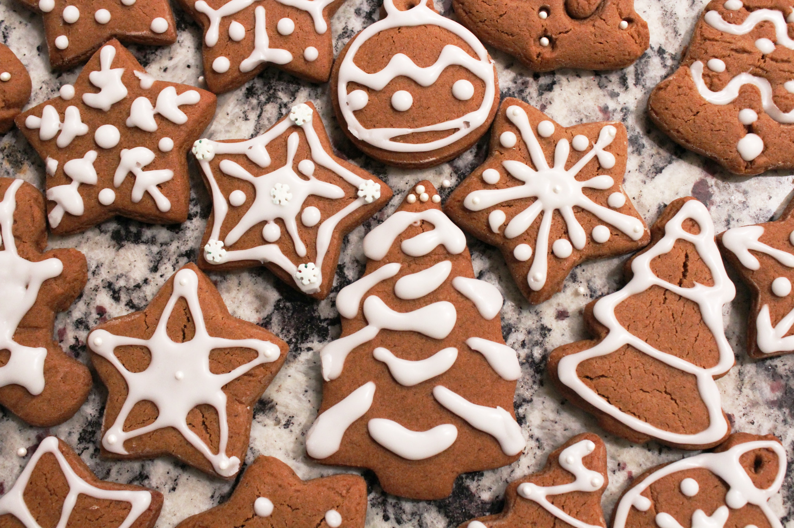

Gingerbread Cookies
- Difficulty: Easy
- Preparation: 30 min
- Cooking: 45 min
- Serves for: 4 people
- Cost: Low
by Iginio Massari
Gingerbread is a sweet food product. Specifically, a dough made by mixing a mixture of honey or molasses and beet or brown sugar, flavored with ginger and cinnamon, with the possible addition of cloves, is called gingerbread.
Ingredients
- 5 g ginger powder
- 350 g flour 00
- 1 pinch nutmeg
- 5 g cinnamon powder
- ¼ teaspoon baking soda
- 160 g sugar
- 110 g cold butter
- 1 egg
- 1 pinch fine salt
- 50 g honey
Preparation and Baking
- Step
To make the gingerbread cookies, start with the spiced shortbread: pour the flour and all the spices: ground cloves, cinnamon powder, grated nutmeg and ginger powder into the blender fitted with blades. Also add 1/4 teaspoon baking soda, the granulated sugar. Then add a pinch of salt and pour in the honey.
- Step
Pour the egg into the center and incorporate it into the dough first with a fork then with your hands. Knead quickly and once the dough has taken on consistency, form a flat ball and cover it with plastic wrap. Place the dough to firm up in the refrigerator for at least 30 minutes.
- Step
Take the dough, roll it out with a rolling pin on a floured pastry board to a thickness between 7 mm and 1 cm. Cut out the shortcrust pastry with your favorite Christmas shapes; we chose classic gingerbread men. If you want, at this stage you can pierce the cookies at the height of the little heads of the men to pass a ribbon through and be able to hang them on the tree.
- Step
With the given amounts you will get about 15 cookies. Transfer the cookies to a drip pan lined with baking paper and bake the cookies in a static oven preheated to 170° for about 15 minutes.